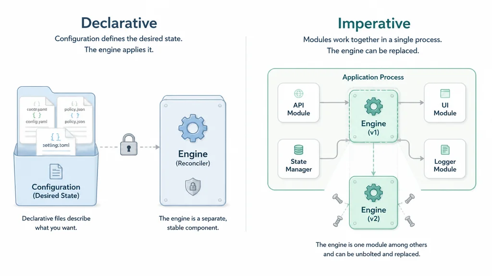

Codex有自己的harness，Claude Code有自己的harness，OpenCode有自己的harness，连Kimi都有了自己的harness，DeepSeek一直保持沉默。8月13日，它终于发布了第一个版本的harness，叫DSH（DeepSeek Harness），代码开源在GitHub上。
DSH跟其他harness非常不一样，不一样到该把它拆开仔细看看。本文拿同样开源的Codex做对照，想搞清楚一件事：DSH和我们手头现有的agent harness相比，底层架构的本质差异究竟在哪里？这个差异对谁有用、对谁又是多余的负担？
先从我们熟悉的Codex说起。你在Codex里用着Tavily搜索，想换成Brave Search。打开配置文件改两行，保存重启harness：旧的搜索进程关掉，新的拉起来，三秒钟，用户基本无感。Codex的插件就是一个磁盘上的文件夹，里面放着声明性资源：Markdown写的skill文件、启动MCP server的配置、或特定事件触发时跑一下的shell脚本。插件本身不会在harness进程里跑代码，它只是一堆文件和配置，harness读取它们并按需拉起独立进程。这种插件叫声明式的。

声明式的好处是简单：harness不需要管插件的生命周期，操作系统帮你管进程的生死；插件之间也不需要互相知道对方的存在，各贡献各的，harness负责调度。但代价是：插件只能贡献文件和配置，不能在harness进程里注册有状态的服务、监听事件、或被其他插件直接函数调用。换句话说，插件能做的事被限制在「给harness提供素材」这个层面，改不了harness自身的行为。
DSH走的是另一种路：它的插件直接在harness进程里跑，带着自己的状态，跟harness同生共死。一个插件装载时，它会在进程里注册自己能做什么，比如「我提供搜索能力」「我提供数据库连接」。别的插件需要什么能力，就声明一下「我需要数据库」，框架负责把两边接上。插件之间通过框架这个中间人互相找着用，而不是像声明式那样各管各的。这种插件叫命令式的：带状态、跑在harness同一进程、被别的插件直接调用。
命令式立刻带来一个声明式不存在的问题：如果你把一个插件换掉了，正在用它的人怎么办？Codex不需要操心这个，因为它的插件贡献的是文件和配置，换掉了下次读的时候就是新的。但DSH的插件是跑在harness进程里的代码，别的插件可能正握着它的引用：旧的一关，引用就悬空了。
框架必须有能力把旧对象关掉、清理掉它占着的连接和后台任务、创建出新对象、再把所有引用切过去。DSH背后有一套叫Cordis的运行时框架专门干这件事：它替每个插件记住自己装载时做过哪些改动，卸载时一件件撤掉；替插件盯着依赖关系：你依赖的服务来了就通知你启动，走了就通知你停下，换了提供者就通知你重新加载；还在热更新时做事务性保护，新代码加载失败就回滚到旧版本，不会卡在半重载的中间态。
在Codex里写一个插件，就是写几个文件放对位置，门槛低到几乎为零；但你要改harness本身的行为（比如换一种context压缩策略），得fork核心代码重新编译。在DSH里写一个插件，必须通过框架的接口注册副作用、声明依赖、返回撤销函数，还要理解插件的生命周期状态机，门槛高不少；但你要改harness本身的行为，写一个插件就行，不用碰核心代码。
剥开架构层看，如果不考虑后面会详细讨论的agent loop问题，两边的上限其实一模一样：最终能做到什么程度，完全取决于你自己写的业务逻辑。如果你写的Codex插件想要类似DSH那样的热替换能力（比如一个常驻进程的MCP server想在不重启的情况下换掉内部逻辑），技术上不难实现，加个reload的API端点就行，但这件事得插件作者自己去做，框架不会替你管。DSH这边也一样，Cordis只负责调度，具体业务怎么清理、怎么恢复，还得开发者自己写清楚。上限由代码质量决定，和选择什么框架关系不大。
真正的差距在于下限。DSH强制你走这条更重的开发路线，但它把基础设施全给你铺好了：撤销条管理、依赖变动通知、事务性回滚，这些边缘坑点Cordis全部踩过一遍（光fiber.ts一个文件就有750行）。Codex给了你极大的自由，默认不需要你承担这些复杂度，但如果你想在Codex插件里实现同等能力，这些活都得自己干，第一次跑大概率会踩到各种边缘情况。
我花了不少时间尝试找出一个场景，试图证明DSH的命令式模型比Codex的声明式模型有明显优势，但说实话，并没有找到。剥开复杂的抽象名词，现实中几乎没有Markdown配合CLI解决不了的问题：搜索服务本来就是单次或短期交互，改配置重启一次MCP server耗时不过两三秒；skill只是纯文本文件，修改后下次读取自动生效，根本不需要框架操心热替换。
真正需要运行时替换的组件，必须满足两个条件：它在进程内持有跨turn状态，且这种状态没有持久化到session log中。在agent harness的世界里，这样的组件少之又少：上下文管理器算是最典型的一个，它内部持有哪些上下文该保留、哪些该压缩的策略状态，这种状态通常不会落入session log，但这也许就是极少数的例外了。
对于绝大多数个人harness用户来说，声明式插件已经能覆盖所有常用功能：搜索、skill、hook，这些主流需求用文件加配置就能解决，不需要进程内热替换那套机制。DSH提供的事务性HMR、撤销条和依赖响应确实都是真材实料，但它们解决的问题，要么Codex靠重启就能轻松覆盖，要么罕见到没必要为此背上整套架构的复杂度。
不过在翻代码时，能看到一个Codex很难通过补充代码追上的地方，这源于最底层的架构选择。Codex里的run_turn() 是一段硬编码的控制流：先做采样前压缩，再构建上下文，接着发起模型请求，处理工具调用，最后进入循环。它暴露的contributor trait只能让你在预设的时间点插hook（比如发送请求前改改prompt、工具调用后做点后处理），但你无法在运行时动态改变控制流的骨架：你没办法把单agent循环改成多agent协作循环，没办法把一次性压缩改成流式按需加载，也没办法把发起请求→等待响应→执行工具的串行逻辑，改成发起请求→流式解析→并行执行工具。
DSH把agent loop放在了packages/core/agent-loop里，它本身就是一个普通插件：向外提供ctx.agentLoop服务，同时声明自己依赖ctx.systemPrompt和ctx.tools。如果你想换一套完全不同的agent loop（比如换成多agent协调循环），只要写一个实现了相同ctx.agentLoop接口的插件，在配置文件里把它替换上去即可。框架会自动卸载旧插件，把之前注册的事件监听和服务全部干净撤销，等新的依赖就位后平滑启动新循环。
这就像传统软件交付和生成内核的区别。传统软件公司交付的是成品家具：一把造型固定的椅子，买回家开箱即用，但你改不了它的结构。生成内核交付的是核心部件加组装说明，用户或者AI可以根据需求自由组装和改装。Codex交付的就是成品家具，里面的agent loop已经死死写定，你只能在预留的扩展槽里塞东西；DSH交付的则是生成内核，agent loop本身就是一个可以整体拧下来的零件。
这就是所谓「为了这碟醋，包了一整盘饺子」：Cordis打造的那整套机制：副作用跟踪、依赖变动通知、fiber生命周期、事务性HMR：本质上全是在支撑agent loop可替换这个核心目标。至于其他特性，不过是这个目标衍生出来的副产品：回滚机制用来在卸载agent loop时把脚手架拆干净，依赖通知用来在loop换版后提醒相关插件重新加载，事务性HMR则防止新代码中的bug导致整个harness当场崩溃。
这套架构带来的真正改变，是给agent的自进化铺平了基础设施：agent在运行过程中如果自己生成了一个新的工具插件，框架可以在不重启进程、不中断当前任务的前提下将其热加载进来。Cordis能保证新生成的插件在卸载时不留残余（撤销条自动清场），保证新旧插件间的依赖关系自动协调（依赖通知生效），还能保证生成的代码一旦出错就靠事务性HMR回滚到上一个稳定状态。
在模型能力这一侧，条件也已经成熟：让LLM生成一个几十行代码、单一功能的工具插件，这早已是日常开发里的常规操作；生成一个几百行代码、能处理turn状态、上下文组装、工具调度和错误恢复的完整agent loop，虽然挑战更大，但也已经踩在了当前顶尖模型的能力边界之内。
要让模型写出可用的loop，关键是harness必须给它提供充足且准确的上下文：Cordis的接口规范、现有agent loop的代码结构、以及插件生命周期的约束条件。DSH的架构让这些上下文天然可见：它的agent loop本身就是写在外面、可读可改的TypeScript插件，无需去读藏在二进制深处的控制流。Codex的agent loop编译死在Rust代码里，哪怕模型进化出了编写全新loop的能力，系统里也没有任何一个接口能把它装上去。DSH恰好补上了这个物理插槽。
回到最开始的那个疑问：DSH到底是不是研究员们在真空里造出来的球形鸡？从代码实现来看并非如此。Cordis的源码里能清晰看到对大量真实工程坑点的妥协与处理：并发卸载时的竞态条件、依赖链传播的终止边界、回滚时disposer执行失败的容错逻辑。这些不像是纯论文推演出来的，倒像是在跑着4000多个插件的生产环境里硬生生砸出来的。
不过，它的适用场景远比论文里暗示的要窄：论文把它包装成了一套普适的新型编程范式，但实际上它专门服务于「运行时热替换进程内带状态组件」这一特定的架构选择。如果不涉及这种运行时热替换，它试图解决的绝大部分难题根本不会出现。
对于绝大多数日常使用Codex、Claude Code或OpenCode的开发者来说，DSH并不会让你的日常写码体验变得更好：Codex那套声明式模型足够简单，开发门槛低，重启一次两三秒完全可以接受；DSH里的Cordis机制对你而言，更多是无谓的复杂度。
但对于那些试图触碰agent harness上限的探索者：希望harness能够自我演化、动态切换loop策略、一边跑一边给自己生成新能力的人：DSH是目前唯一把底层基础设施搭建完毕的方案。它不会直接让AI变得更聪明，也不会让日常coding速度变快，它做到的，是让harness本身的行为具备了适应与演化的可能。为了自进化这碟醋，DSH包了一整盘饺子。饺子好不好吃另说，但醋目前确实只有这里有。
参考：https://yage.ai/share/dsh-deep-analysis-20260813.html